obscurebit/var/www/obscurebit :: public nodes
For the curious.
A growing collection of experiments with technology, software, art, sound, AI, and design.
find ./experiments -type f -perm -u+x -not -path "*/obvious/*"
drwx------@ 4 obscurebit staff 123B Feb 13 23:31:30 Experimentsb1ts
AI-generated sci-fi stories and curated links from hidden corners of the web, published daily.
https serve bits.obscurebit.com 002 ai / audio / visualOAV
AI model audio-visual output, poetic text, drift, and synthetic atmosphere in a single unstable viewport.
https serve oav.obscurebit.com 003 rhythm / synthDJ
A rhythm box and synth box for making pulses, loops, and small electronic weather.
https serve dj.obscurebit.com